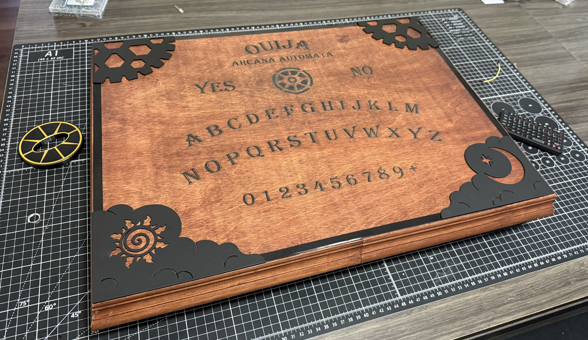
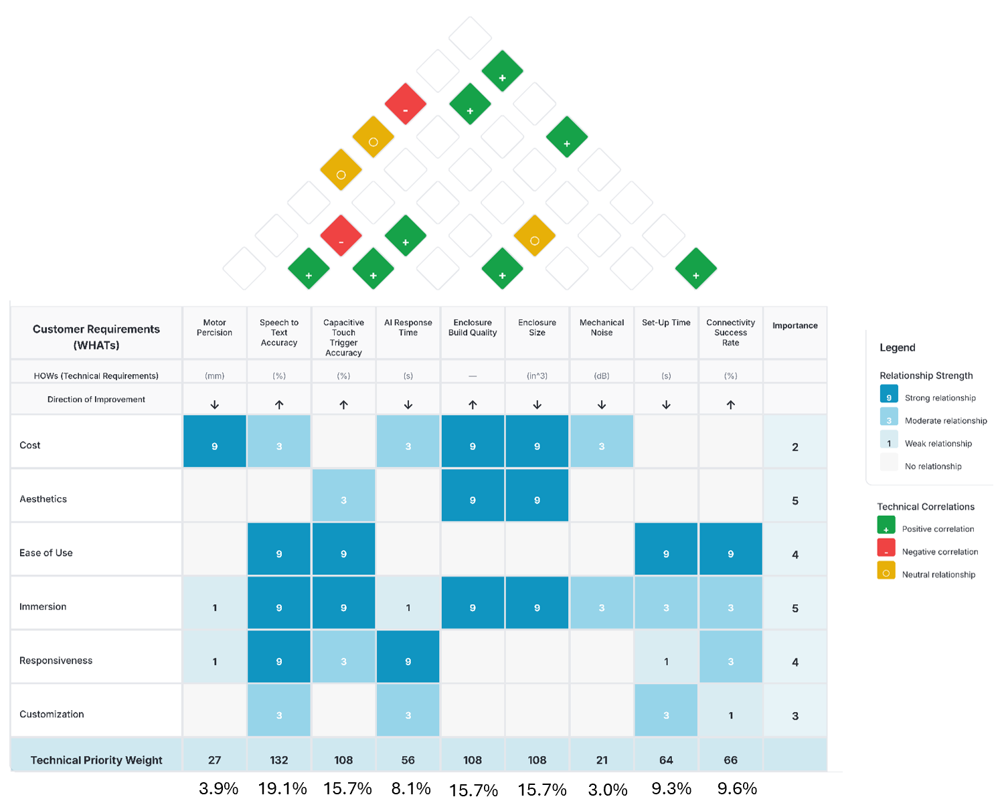

Project Objectives
Conduct research into Human-Machine-Interaction to develop an intelligent product that properly communicates its capabilties. Then use QFD to turn this research into design objectives and manufacture a functional prototype of the Aracna Automata: Robotic Spirit Board.
- Emulate tactile feel of orginal Ouija Board through use of capacitive touch sensors.
- AI Control Mode: Ask questions in your natural voice, and an AI (LLM) will impersonate a spirit.
- Keyboard Mode: Allow a user to control the experience (best for: parents, theater or RPGs)


Live Demo
Showcases the Aracna Automata in action.
When touching the metal decals, the microphone activates. It then sends the audio recording to a Speech-to-Text model, which then prompts an AI "spirit" to respond by moving the hidden mechatronic gantry.
Shown on the right is the companion app, that connectes to the inernet and sends data to the AI models.
Design Objectives
Utlizied Quality Function Deployment (QFD) to translate customer needs into specific design requirements. This process uncovered which technical specifications are most important to prioritize.
